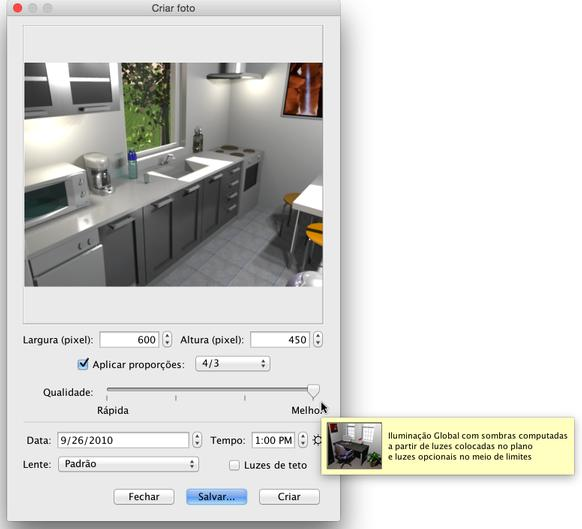

Para criar imagens ou fotos em 3D de sua casa, escolha a Visão 3D
> Criar Foto... ou click na ferramenta Criar foto
 FerramentaCriar
foto FerramentaCriar
foto
Isto irá mostrar a seguinte caixa de diálogo mostrando o tamanho,
qualidade e, possivelmente, outras configurações utilizadas durante o
processo de criação de imagem, juntamente com o botão "Criar", que lança
o carregamento da imagem, e o botão Salvar... que lhe permitirá salvar a
imagem mostrada, uma vez carregados.

Se o tamanho padrão da imagem não satisfazê-lo, escolha uma largura
e altura diferentes. Quando a caixa de seleção Aplicar proporções é
selecionada, a altura da imagem é atualizada automaticamente a cada
mudança de largura de acordo com as proporções indicadas pela caixa de
combo box ao lado da caixa de seleção Aplicar proporções.
O controle Qualidade permite que você escolha entre
os quatro níveis seguintes, de pior a melhor qualidade, ou a partir
do mais rápido para a mais lenta renderização,
dependendo da sua forma de pensar
|